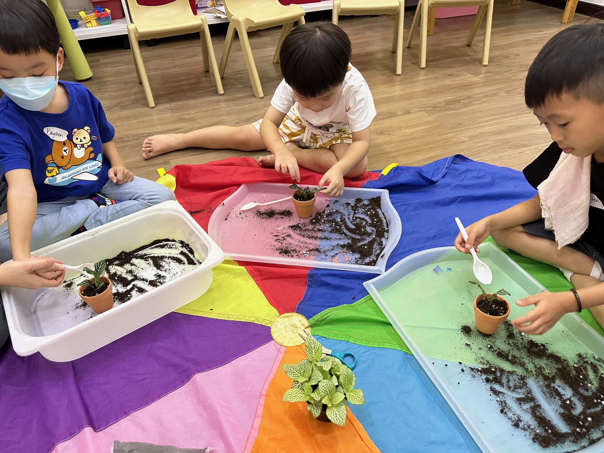
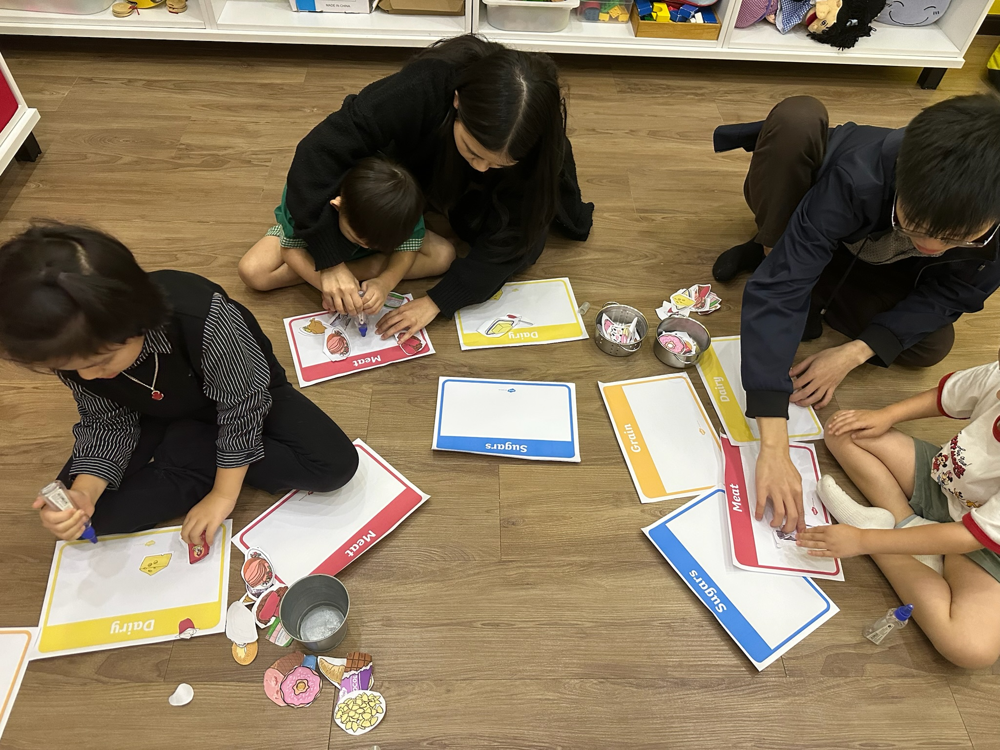
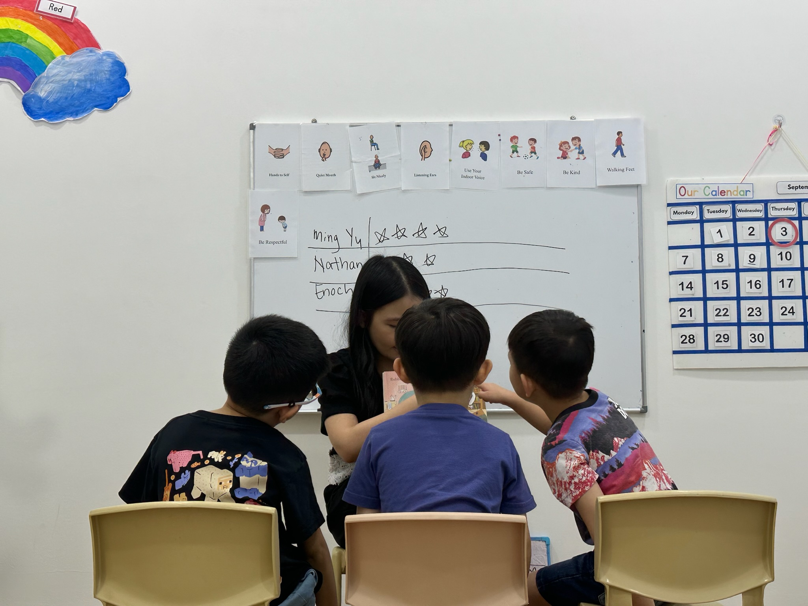

自闭症、ADHD（注意力不足过动症）或发展迟缓的孩子——以及还没有诊断、也许永远不需要诊断的孩子。开始之前，您不需要转介信。
还不会说话，或者别人听不懂他说什么
一个人玩，或只是在其他孩子旁边玩，而不是一起玩
很难坐得住、听指示、等待或跟着作息走
小小的改变就引起很大的反应
幼儿园表示老师很难应付
别人叫您“再等等看”，可您不想再等
三个孩子配一位老师。您的孩子能得到贴身的关注，计划也是为他个人制定的——而不是跟着小组的进度走。
练习沟通的孩子，需要有人可以沟通。加入游戏、等轮到自己、别的孩子拿走玩具时怎么应对——这些都没办法一对一练习。
听懂、表达、提出自己的需要，并且让家人以外的人也听得懂。
先是在旁边一起玩，再到真正一起玩。分享注意力、轮流、跟着别的孩子的点子玩。
把一项活动坚持做完、听从指示，以及课室学习所依赖的早期思考能力。
面对计划改变时怎么应对、如何处理挫折，并且看到行为背后的原因，而不只是行为本身。
坐好、听讲、等待、排队、收拾东西，以及在不同活动之间转换时不崩溃。
书包、鞋子、点心、上厕所——这些日常小事，往往决定孩子能不能在学校待得下去。



大多数课程没有终点，我们的课程是为了“结束”而设计的。我们的方向，是让孩子顺利进入幼儿园或学校——转换的过程中我们也会继续陪伴，因为入学最容易出问题的，正是这一步。
评估与目标我们先从了解您的孩子开始，然后与您以书面方式订立目标——具体到您能看出有没有达成。
课程进行每次 2–3 小时，每周 2–5 天，三人一组。进展会对照目标来追踪，并每三个月向您汇报一次。
循序渐进地进入学校我们先培养课室真正需要的能力，再帮助孩子慢慢过渡进去，而不是一下子全部投入。
与学校合作征得您同意后，我们会与老师分享策略、出席会议，并在孩子适应期间随时提供支持。
每月 RM 2,400 起
视每周上课天数而定。开始之前，一切都会先与您商定。
不需要。这里很多孩子都没有诊断。我们也不做诊断——在马来西亚，这是儿科医生和医生的职责；如果我们认为您应该去看医生，会直接告诉您，并协助您联系。
可以——课程里大部分孩子上午在学校上课，下午来我们这里，培养上午学校对他们的要求所需要的能力。我们会直接与孩子的学校合作，所以两边不是各走各的：我们在这里培养的能力，是要用在课室里的，而不是只留在我们的课室。也有些孩子还在朝入学迈进，暂时没有学校名额——我们会按照他们的步调，一步一步地支持。
以孩子为主导的方法，让孩子成为主动的参与者，而不是被动的接受者——再结合 ABA（应用行为分析）的原则与技巧所带来的结构，并且全程以优势为本。实际做法是：先培养孩子欠缺的能力——也就是学习上真正的阻碍——再针对妨碍学习的行为，运用以 ABA 为基础的策略。我们从孩子已经会做的事开始，而不是只盯着他做不到的。
目标在一开始就会与您以书面方式订立，我们每三个月会对照目标正式检讨一次进展。您随时都会知道孩子的情况——如果某个方法行不通，我们会直接说出来并调整，而不是等到下一次检讨。
真的要看孩子——他们的起点、进展，以及我们、您和学校能配合得多紧密。有些孩子进步得快一些，有些需要更长的时间，我们不会为了给您一个整齐的答案而随便报个数字。我们能承诺的是：每三个月都会和您一起检讨，不会让您一直猜。
由一位受过训练的干预员负责，并在主任干预员和教育心理学家的督导下工作。您的孩子每次上课都会见到同一个人，而这个人的工作有上面两层把关——不会只凭一个人的判断。
告诉我们孩子的年龄、您留意到的情况，以及您希望得到什么帮助。我们会坦诚地告诉您哪个课程适合——即使答案是都不需要。
自信，能干，独立学习。